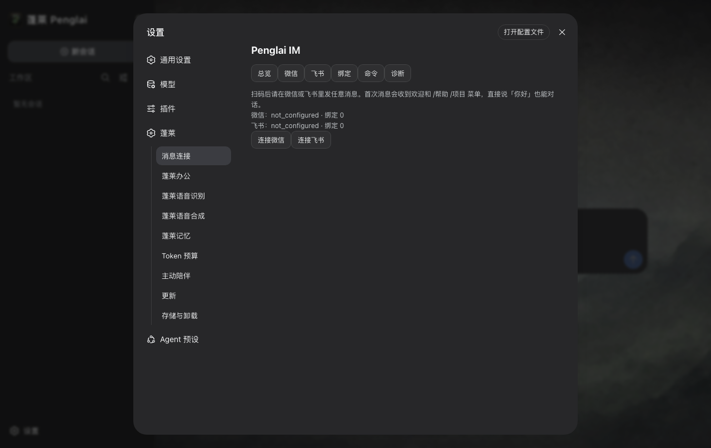

Penglai Office
Inspect, create, edit, preview, and save DOCX, XLSX, PPTX, and PDF. Writes have a plan and confirmation. PDF output includes a Chinese font. LibreOffice is not a user dependency.

Penglai 0.5.11 · DeepSeek Harness 0.1.2-rc.1
Penglai puts official DeepSeek Harness, Node, Electron, first-run setup, updates, uninstall, and a reviewed set of DSH plugins into one desktop app. You do not need to learn a terminal first, or move daily work into another cloud account.
MIT licensed · Local first · Apple Silicon / Intel Mac / Windows x64
DSH remains the only core
Official DeepSeek Harness owns models, tools, approvals, Workspace, Session, Turn, and the conversation interface. Penglai 0.5.11 consumes the exact official 0.1.2-rc.1 npm packages, tag dsh-v0.1.2-rc.1, commit a66e4702047846cdaa10c66c9d3df3951f5ea70d. Message recovery, budget reconciliation and Companion replay use its Session snapshot API. Upgrades from 0.5.8, 0.5.9 and 0.5.10 prepare a separate data generation and keep the previous one for rollback. All three native installers come from source 77e7105773b4d43abb7315ea6e83abe17e646cb4.

Already in the installer
Inspect, create, edit, preview, and save DOCX, XLSX, PPTX, and PDF. Writes have a plan and confirmation. PDF output includes a Chinese font. LibreOffice is not a user dependency.
Safe project facts can be organized inside the current Workspace. Candidate curation calls your selected model provider; storage and recall stay local. Personal facts still need an explicit save, and recall never crosses Workspaces.
Weixin, Feishu, DingTalk, WeCom, QQ, Slack, Telegram, and Discord enter one @penglai/im control plane, using each platform's QR, device-registration, or official-token flow. WhatsApp is not displayed, supported, or bundled in 0.5.11.
SenseVoice handles speech recognition; MOSS-TTS handles voice generation. Conversation Read speaks the original reply rather than translating it. Plugin code ships in the app. Large model weights explain themselves before downloading.
It contacts you only after you turn it on, and stays within quiet hours, a daily cap, and one chosen messaging route. Fresh installations keep it off.
The catalog comes from immutable GitHub Releases. A reviewed DSH 0.1.2-rc.1-compatible plugin can join later without shipping a new desktop version merely to change a list. UI state is never proof of installation or health.




A real office path
Penglai Office is a closed set of typed operations: inspect, create, build a visible edit plan, preview, commit after confirmation, and undo the last commit. Models cannot invent host paths or run macros. Inputs and outputs are host-issued artifact:<uuid> handles, and Workspace bounds are checked again at the operation.
Memory that knows its project
A fresh install organizes safe project facts inside the current Workspace. After a Turn, a no-tools official Agent uses your current provider and model; the host validates a closed schema and skips secrets, sensitive text, and injection-like output. Later steps recall only confirmed records from this Workspace, plus personal facts you explicitly saved.
First launch should not be a wall
Choose language and appearance, read the local-data boundary, pick a provider and model from the official catalog, test your own API key, choose a real Workspace, then send the first message. You can go back, retry, and resume after restart. A failed request is never dressed up as success. The app data directory and the install directory cannot be Workspaces.
Penglai/0.5 generation remain.
Privacy and trust
No Penglai cloud sync. Official DSH bundles a session-telemetry adapter and a dormant DeepSeek OTLP endpoint. Penglai hard-disables that row after profile patches, so the owned DSH process constructs no SDK provider or upload pipeline. Model calls still send the context needed for that task to the provider you selected.
Writes and outbound delivery need their own confirmation. Office save/return, personal Memory, and plugin install use product confirmation bound to that action. Diagnostic export must not contain credentials, chat bodies, QR codes, or private absolute paths.
macOS is not notarized. The DMGs are ad-hoc signed; Windows has no Authenticode. Gatekeeper or SmartScreen may warn. Penglai Ed25519 signatures protect updater and plugin bytes; they are not Apple or Microsoft publisher identity.
Plugins are not a sandbox. Signatures, hashes, permissions, and rollback protect distribution, but DSH plugins still share the local DSH process. Credential-free checks do not prove an external model reply or account message delivery.
Why Penglai
I spent more than ten years around networking, security, and operations, but I was not a software developer. Penglai began with one stubborn idea: in the age of AI, ordinary people should be able to build tools for themselves.
Computers travelled from command lines to windows and then into everyone's pocket. Agents should make the same trip. If I can send a message, I should be able to reach my own assistant. If it acts for me, I should be able to see what it was allowed to do, what actually happened, and what it cost.
Penglai has been rebuilt more than once. The important decision in 0.5 was to stop building another agent and stand on DeepSeek Harness instead, then do installation, Office, Memory, messaging, and local voice properly. Older generations remain in Git history because they explain the journey; their runtimes are not mixed into the new DSH core.
Kevin Chen / 陈克文
FAQ
No. Official DeepSeek Harness is the only core. Penglai owns install, lifecycle, and first-party plugins. There is no second chat page.
The public installers are 0.5.11. Published 0.5.10 remains an immutable historical release. There is no public 0.5.12 installer yet.
macOS packages are ad-hoc signed and not notarized; Windows has no Authenticode. That is a stated limitation, not an OS endorsement. Do not turn off system security to install.
Yes. Messaging, speech recognition, voice generation, and Companion stay off until you enable them. Optional plugins must not block ordinary conversation when they fail.
The wizard supports Back, retry, and resume after restart. A failed credential test is never recorded as success. You can enter the key again or return to model selection.
Default uninstall removes the application and cache while preserving user data. Complete delete uses a separate category plan and must not recursively wipe a Workspace or home directory.
Penglai 0.5.11
7a59833e32ae7cdcfc6dae6b1c2d744f251cb929cf251d758479c25fca41c536
macOS · Intel
GitHub · 389.8 MiB · x86_64 Mac
783fcf5c042998d1a550d7c48fe30879d78f996d5602f002dea411826e210798
Windows · x64
GitHub · 341.1 MiB · 64-bit installer
5862cf0df14daf12ef223d5a825cad501ea56f78a40cdb54bef4fa8b7779c929
The current public download is published 0.5.11. Published 0.5.10 remains immutable. There is no public 0.5.12 installer yet; when those immutable bytes exist, these cards will name them. This page is the 0.5.12 website candidate, not a 0.5.12 download. The immutable GitHub Release is the sole authoritative public download source; the Beijing mirror has not published 0.5.11. All three installers come from source 77e7105773b4d43abb7315ea6e83abe17e646cb4. Full SHA256SUMS, SBOM, third-party notices, and signed update metadata are on the same page. Updates are never silent.